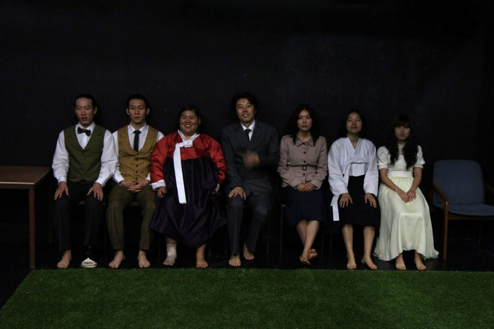

천재 시인 백석의 삶의 여정을 추적하며, 삶이 예술이 되는 순간과 예술이 삶이 되는 순간의 접합점을 찾는다. 우리는 백석이 남긴 시가 아니라 백석이 남긴 삶을 기억하게 될 것이다. 그린피그 '예술가 연작' 첫 번째 작품.
2011.11.9–13 / 연극실험실 혜화동1번지
연출: 윤한솔
글쓰기: 전성현
공동구성: 그린피그
출연: 곽동현, 안민영, 박하늘, 이동영, 이정호, 황미영, 정양아
드라마터그: 김민승
의상: 이유선, 김가희
음악: 민경현
조명: 우수정
미술: 이완
움직임: 김수정
홍보영상: 박영민
목소리 출연: 송정화
기계 조작: 도율희, 임정희, 임지원
기획: 드림아트
이전: 연변엄마 | 다음: 두뇌수술
아카이브로 돌아가기 | 아무 작품이나
발행일 2026.11.13